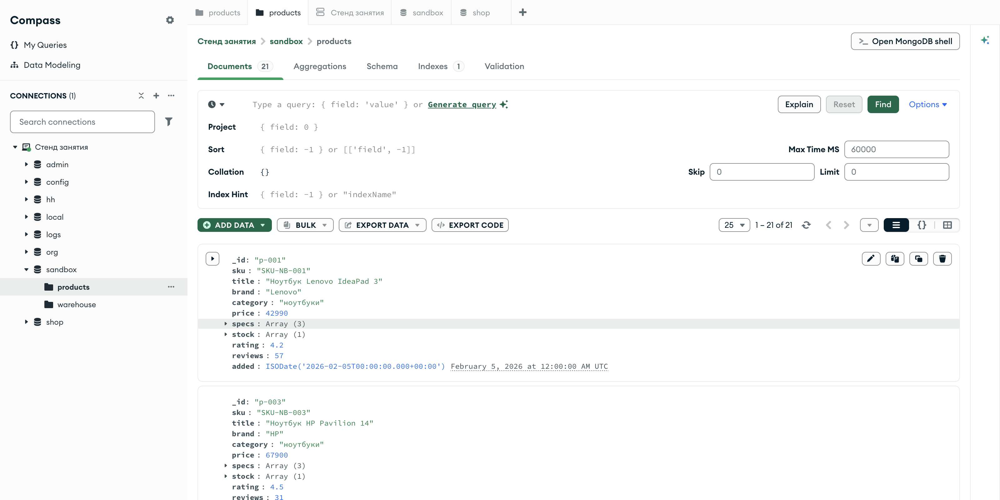

Справочник по MongoDB · модуль 1 · подключение и первые данные
Глава 1.3
Вставка
документов
Первая из четырёх операций над данными: положить документ в коллекцию. Разберём insert_one и insert_many, что возвращают эти методы, откуда берётся _id и что произойдёт, если в середине пачки попадётся плохой документ.
«Записать данные легко. Сложно потом объяснить, откуда взялась половина из них.»
- Категория
- Операции над данными
- Уровень
- Начальный
- Связанные темы
- Документ и BSON, обновление, удаление
- Зачем это знать
- Класть данные так, чтобы их потом можно было найти и не задвоить
§1Песочница: где мы работаем
Начиная с этой главы мы меняем данные, поэтому работать будем в отдельной базе sandbox. В ней лежит копия коллекции товаров — те же 21 документ, что и в shop.products.
from pymongo import MongoClient client = MongoClient("mongodb://localhost:27017/") box = client["sandbox"]["products"] # здесь можно ломать print(box.count_documents({})) # 21

sandbox.products — та же 21 позиция, что и в shop.products, но эту копию можно менятьПравило простое и вполне рабочее: эталонные данные не трогаем. В проекте роль песочницы играет отдельная база разработчика или контур тестирования, и по той же причине: чтобы упражнение не испортило то, на что смотрят остальные. Если песочница разъехалась — её восстанавливают одной командой из репозитория практик.
§2insert_one: один документ
Метод insert_one принимает обычный словарь Python и кладёт его в коллекцию как документ.
result = box.insert_one({ "sku": "SKU-AC-022", "title": "Коврик для мыши XL", "brand": "OEM", "category": "аксессуары", "price": 1290, })
db.products.insertOne({ sku: "SKU-AC-022", title: "Коврик для мыши XL", brand: "OEM", category: "аксессуары", price: 1290 })
Поля _id мы не указали — и сервер добавил его сам. Ни коллекцию, ни базу заранее создавать не пришлось: если бы sandbox.products не существовала, она появилась бы в этот момент.
§3Что возвращает вставка
Возвращается не документ, а результат операции — объект с двумя полезными полями.
print("подтверждено:", result.acknowledged) print("присвоенный _id:", result.inserted_id) print("тип:", type(result.inserted_id).__name__) print("время создания:", result.inserted_id.generation_time)
подтверждено: True присвоенный _id: 6aa08c51503a4f190a669c88 тип: ObjectId время создания: 2026-09-08 22:29:37+00:00
False бывает только при особых настройках, когда программа сознательно не ждёт подтверждения.подтверждениеЧастая ошибка новичка — ожидать, что insert_one вернёт сам документ. Он его не возвращает: чтобы увидеть, что получилось, документ нужно прочитать обратно по ключу.
§4insert_many: пачка документов
Класть документы по одному в цикле — плохая идея: каждый вызов идёт до сервера и обратно. Для пачки есть insert_many, отправляющий всё одним обращением.
many = box.insert_many([ {"_id": "p-101", "title": "Подставка для ноутбука", "category": "аксессуары", "price": 2490}, {"_id": "p-102", "title": "Чехол для планшета", "category": "аксессуары", "price": 1890}, ]) print("вставлено:", len(many.inserted_ids), "→", many.inserted_ids) print("документов в песочнице:", box.count_documents({}))
вставлено: 2 → ['p-101', 'p-102'] документов в песочнице: 24
Двадцать четыре, а не двадцать три: к двадцати одному исходному товару добавился коврик из §2 и две новые позиции. Поле inserted_ids — список ключей в том же порядке, в каком шли документы.
Тысяча вызовов insert_one — это тысяча обращений к серверу, и время уходит не на запись, а на дорогу. Один insert_many на тысячу документов отправляет их пачками и работает на порядок быстрее. Именно так устроена загрузка данных из файла, которой мы пользуемся для восстановления стенда.
§5Свой _id и его уникальность
В примере выше мы задали ключи сами — "p-101" и "p-102". Так делают, когда у объекта уже есть естественный идентификатор: артикул товара, номер заказа, логин пользователя. Но тогда за уникальность отвечаете вы, а сервер её жёстко проверяет.
from pymongo.errors import DuplicateKeyError try: box.insert_one({"_id": "p-101", "title": "Ещё одна подставка"}) except DuplicateKeyError as error: print(type(error).__name__) print(str(error)[:110])
DuplicateKeyError
E11000 duplicate key error collection:
sandbox.products index: _id_ dup key: { _id: "p-101" }
Код E11000 — тот самый случай, когда база спасает данные от вас. Читается сообщение целиком: коллекция sandbox.products, индекс _id_, значение "p-101". Тот же код вы увидите и при нарушении любого другого уникального индекса — например, если запретите повторяющиеся артикулы.
§6Порядок вставки: ordered
Что произойдёт, если в пачке из ста документов десятый окажется с повторяющимся ключом? Ответ зависит от параметра ordered, и по умолчанию он равен True.
| Режим | Поведение | Когда выбирают |
|---|---|---|
ordered=Trueпо умолчанию |
Документы идут по порядку. На первой ошибке вставка прекращается: первые девять записаны, десятый и все следующие — нет | Когда порядок важен или когда лучше остановиться и разобраться |
ordered=False |
Сервер пытается вставить все документы, плохие пропускает, а в конце сообщает обо всех ошибках сразу | Загрузка данных из внешнего источника: пусть войдёт всё, что можно, а сбойные строки разберём потом |
from pymongo.errors import BulkWriteError try: box.insert_many(batch, ordered=False) except BulkWriteError as error: failed = error.details["writeErrors"] print(f"не вставлено: {len(failed)} из {len(batch)}") for item in failed[:3]: print(" ", item["errmsg"][:80])
Обратите внимание: даже в этом случае часть данных записана. Исключение говорит «не всё прошло», а не «ничего не произошло», — и это принципиально при повторном запуске загрузчика.
§7Вставка руками в Compass
Тот же документ можно положить мышью: в коллекции есть кнопка ADD DATA → Insert document. Compass откроет окно, в котором документ пишется как JSON.
_id уже заполнено новым ObjectId — его можно оставить или заменить своим.шаг 2Проверка JSON до отправки — тот же контроль, что и в строке фильтра: база не получит заведомо неразбираемый документ. После вставки счётчик коллекции увеличивается на единицу, а новый документ появляется в списке — с _id типа ObjectId, если вы не задали ключ сами.
§8Загрузка файла целиком
Данные редко вводят руками. Обычно это файл — выгрузка из другой системы, экспорт коллекции, набор для стенда. Способа два, и оба вам понадобятся.
mongoimport --uri "mongodb://localhost:27017" \
--db sandbox --collection products \
--file products.json --jsonArray --drop
import json with open("products.json", encoding="utf-8") as handle: docs = json.load(handle) box.delete_many({}) # повтор без задвоения box.insert_many(docs)
Ключ --drop у mongoimport и delete_many({}) в коде делают одно и то же: очищают коллекцию перед загрузкой. Без этого повторный запуск удвоит данные — и это самая частая причина, по которой у студента «не сходятся числа»: загрузку выполнили дважды.
В Compass тому же соответствует ADD DATA → Import JSON or CSV file. Файл может быть массивом документов или потоком объектов по одному на строку — Compass поймёт оба формата.
§9Частые ошибки
| Что написано | Что происходит | Как правильно |
|---|---|---|
insert_one([...]) со списком | TypeError: document must be an instance of dict | Список — это insert_many |
doc = insert_one({...}) | В переменной результат операции, а не документ | Читать обратно: find_one({"_id": result.inserted_id}) |
| Повторный запуск загрузчика | Документов вдвое больше, числа в отчётах не сходятся | Очищать коллекцию или задавать свой _id, чтобы повтор упёрся в E11000 |
insert_many в цикле по одному документу | Работает, но медленно: каждый вызов — обращение к серверу | Собрать список и вставить одним вызовом |
| Тот же словарь вставлен дважды | DuplicateKeyError: PyMongo дописал _id в исходный словарь при первой вставке | Копировать словарь или создавать новый для каждой записи |
Последняя строка таблицы неочевидна и стоит нескольких часов отладки. PyMongo дописывает сгенерированный _id прямо в переданный словарь. Поэтому for _ in range(3): box.insert_one(template) вставит один документ, а на втором обороте упадёт с DuplicateKeyError: в template уже лежит _id от первой вставки.
§10Проверьте себя
Мы вставили документ в коллекцию, которой не существовало. Что произошло?
Коллекция создалась сама в момент вставки — а если не существовало и базы, то и база. Отдельной команды на создание не требуется.
Что вернёт insert_one и как получить сам вставленный документ?
Вернёт объект результата с полями acknowledged и inserted_id. Документ читается обратно: box.find_one({"_id": result.inserted_id}).
В пачке из 100 документов десятый нарушает уникальность. Сколько документов окажется в базе при ordered=True и при ordered=False?
При ordered=True — девять: вставка останавливается на первой ошибке. При ordered=False — девяносто девять: сервер пропустит сбойный документ и вставит остальные, а в исключении перечислит все неудачи.
Загрузчик запустили дважды, и товаров стало 42 вместо 21. Что делать и как не повторить?
Очистить коллекцию и загрузить заново: delete_many({}) или mongoimport --drop. Чтобы повтор был безопасным, задавайте документам собственный _id — тогда вторая загрузка упрётся в E11000, а не создаст копии.
Зачем в учебном стенде отдельная база sandbox?
Чтобы упражнения не меняли данные, на которых построены примеры книги и ответы к практикам. В проекте у этого приёма то же название и та же цель: отдельный контур для экспериментов.
§11Шпаргалка
res = col.insert_one({...})
res.inserted_id
# mongosh: insertOne({...})
res = col.insert_many([...])
res.inserted_ids
# insertMany([...])
col.insert_many(
docs, ordered=False)
# ловить BulkWriteError
col.delete_many({})
col.insert_many(docs)
# или mongoimport --drop
Итог главы
insert_one кладёт один документ и возвращает его ключ, insert_many — список документов одним обращением к серверу. База и коллекция создаются сами при первой записи, а _id либо задаёте вы, либо генерирует сервер. Уникальность ключа проверяется всегда: повтор даёт ошибку E11000, и это защита, а не помеха. Данные в базе есть — в следующей главе научимся их доставать.